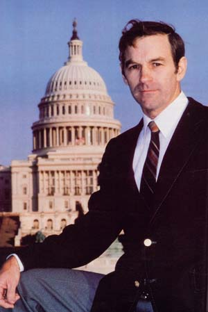
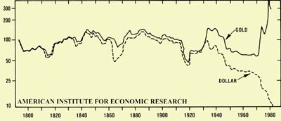
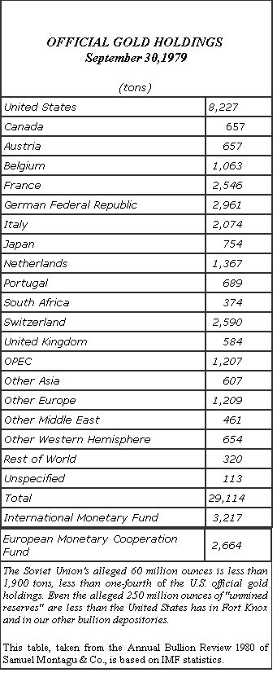

GOLD: THE MONEY OF THE PEOPLE
As this issue of THE Mother Earth News(R) approaches deadline, over 12 million men and women in the United States are unemployed, and our cities are filled with thousands of homeless, hungry people. As ofthe end of 1982, production had dropped for 17 months in a row, the longest consecutive fall since the Great Depression. And our national debt has exceeded $1 trillion. Furthermore, such tragedies are compounded by the fact that eastern-bloc Communist and Third World nations owe over $850 billion on loans ... which, if not repaid, could cause some of our nation's biggest banks-and perhaps even the international banking system itself-to collapse. And all this is happening in a country that just a short time ago had the world's highest living standard and its strongest economy.
The blame for this disastrous state of affairs has been laid at many doors. OPEC, the World Bank, Japanese imports, high interest rates, Reaganomics, and so on. But Ron Paul-a gentleman who has served in the House ofRepresentatives in the 94th, 96th, 97th, and now the 98th Congress and is also a member of the House Banking Committee-thinks that these "causes" are all just symptoms of a much greater evil, and he's been predicting our present economic chaos for years. Unlike most doomsayers, however, Paul claims to have a solution to our fiscal woes.
Recently, staffer Sara Pacher went to Washington, D. C. to talk to the Congressman, a gracious and articulate doctor who studied internal medicine at Detroit's Henry Ford Hospital, and obstetrics and gynecology at the University of Pittsburgh ... served as a flight surgeon in the U.S. Air Force ... and has a private medical practice in Lake Jackson, Texas, where he lives with his wife Carol and their five children.
After spending a few hours with this advocate of individual freedom and sound currency, Sara concluded that it's probably no coincidence that "In God We Trust" first appeared on American money in 1864, at the end of the Civil War ... which was another period in our history when the government tried to pass off worthless "greenbacks" as valuable currency.
PLOWBOY: Most Americans are aware-many because the truth has touched their very lives-that our economy is facing its worst crisis in 50 years. Just how did we manage to get into such a mess?
PAUL: Well, in some ways, the story is a complicated one, but a major factor in our economic downfall-if not the most influential -has been the deliberate destruction of our money. You simply cannot have a healthy economy without a sound currency. Consider, if you will, how difficult it would be to build a house if your yardstick were to change its length each day: Can you imagine what kind of structure would result if a carpenter used a "standard" measure that was 16 " one day, 32 " the next, then 56 ", then 43 "? And that's essentially what we're trying to do ... run an economy using a value measurement that continually fluctuates.
In the 1784 debate concerning the handling of our country's currency, Thomas Jefferson said, "If we determine that a dollar shall be our unit, we must then say with precision what a dollar is." But now, just like that poor carpenter with a changing yardstick, we don't know from day to day what a dollar will be worth. And this lack of knowledge keeps us from projecting realistic economic calculations. You have to have a unit of measure if you're to make such calculations, and we've destroyed the necessary system of measurement: our money.
PLOWBOY: And you believe the solution is to back our currency with gold?
PAUL: It's very clear-at least to those of us who advocate hard money-that if you have something real, such as an ounce of gold, it remains the same from day to day ... year to year ... century to century. As we've seen-particularly in the past few years-gold's value in terms of the dollar fluctuates, but that's the dollar fluctuating, rather than the gold itself.
Karl Marx, in his 1848 Communist Manifesto, urged the "centralization of credit in the hands of the state, by means of a national bank with state capital and an exclusive monopoly". Sixty-five years later, the United States followed his advice and passed the Federal Reserve Act of 1913, which made possible the massive inflation necessary to finance our entrance into World War 1.
Since 1913, we've gone on to destroy our money ... to the point that in 1971-when Nixon "closed the gold window"-we totally separated the dollar from gold. And ever since then we've had very, very chaotic conditions . . . marked by a tripling of the money supply and a deterioration of the economy.
PLOWBOY: When Nixon took that step-that is, made it impossible for anyone to cash in U.S. dollars for gold-a number of people predicted just such an outcome. So why was the gold window closed.) Were we bankrupt?
PAUL: In effect, yes ... but it wasn't quite the same thing as, say, Mexico's going bankrupt today. You see, in 1944 the U.S. attended an international conference and helped draw up the Bretton Woods Agreement. We said, "We're rich. We have 745 million ounces of gold. We're so rich, in fact, and we have so much gold backing our dollar, that there's no way we could ever print too much money. Therefore, our dollar is as good as gold. From now on, just trust us. The metal is here, but it's old-fashioned to swap it back and forth."
That agreement, of course, allowed U.S. politicians to print unlimited supplies of paper money. In fact, they did just that for years ... in order to finance such things as the Great Society and the Vietnam War. Finally, though-in 1971-other countries called our bluff and started cashing in their dollars ... to the point that our gold supplies dropped to 263 million ounces. It was then that we had to renege on our promises. When Nixon closed the gold window, it was an admission that the 1944 Bretton Woods Agreement was dead, and that the gold standard was dead ... and at that point the dollar took one more step toward its final destruction.
Still, we weren't bankrupt then in the same sense that Mexico is today ... but that's coming. That last stage-when you have no redeemability of money-is the result of a total loss of trust. During one weekend last year, everyone lost trust in the Mexican peso and dumped it.
Back in 1979, though, as we moved into an age of runaway inflation, the United States did come close to experiencing what has happened in Mexico ... that is, the rampant dumping of currency. That's why our government had to change the rules, and cut back on the money supply and raise interest rates to save the dollar. Although we do have some remaining public trust in our currency, I claim it's a false trust, and I'm afraid it won't last. Sure, the government says it'll protect your money, and a lot of people don't really understand what's been happening, so the system still works. But in a moral sense, at least, 1971 was the year we completely destroyed our currency.
In summary, then, the dollar still functions in the economic sense ... but it may be that some weekend, some day in this decade, the world will finally reject our worthless paper and dump it. Then you could see gold go up to $5,000 an ounce in a very short time and silver to $100 or $200, and total chaos would follow. It'd be a real calamity, even worse than Mexico's crisis. There, you see, we were able to go in and bail that country out, because-in terms of pesos our dollar was still strong and could be used to prop up the Mexican currency. But if the dollar fails, no one else will be able to do that for us.
PLOWBOY: I've heard that, under the Monetary Control Act of 1980, our government can actually use such currency bailouts to back our own money. Maybe you could explain how that law works.
PAUL: OK. The Monetary Control Act was the most significant change in the Federal Reserve System since 1913. It allowed reserve requirements to drop to zero, if desired ... which means that a massive expansion of money became possible. It also put 15,000 institutions (instead of 3,000) under the Federal Reserve System ... which, in effect, lets them go to the discount window and borrow from the government in case of emergencies. And most important, it permitted the Federal Reserve to use foreign bonds as backing for our own currency. And where does the Fed get these bonds? Well, believe it or not, it usually creates Federal Reserve notes out of thin air ... exchanges them for foreign currencies ... buys the bonds ... puts them in the bank and calls them assets . . * and then prints more Federal Reserve notes that are "backed" by those deposits!
The Fed used to give me information on all that, and I'd keep tabs on what it was doing. But after the Mexico crisis, the agency's people quit answering my questions. Finally, they did admit that we've purchased Mexican pesos with dollars, and-under the lawwe can monetize those . . . that is, use them as backing for our currency. So here we sit, talking about backing our money with gold ... while the Fed backs our currency with next-to-worthless Mexican pesos! It's actually able to do that!
PLOWBOY: I'm sure the Monetary Control Act hasn't alleviated any international anxiety.
PAUL: No, there's a growing worldwide loss of confidence in the international banking system. In fact, Secretary of the Treasury Regan has been talking about getting together with all the larger countries to try to come up with a new Bretton Woods-type agreement. And when officials start talking about convening international conferences, you know darn well they're a little scared. They're also afraid to tell you the truth ... but there are already signs of concern among the public, despite the fact that much is being kept from them. We've seen gold and silver prices 'jumping up again ... and who knows what tomorrow will bring? I have to hope the "tricks" that the government is using will work for a little while ... mainly to give us more time. But even if the current reinflation seems to improve our economy, we shouldn't be deceived ... because it will be only a temporary solution. Let's say interest rates and unemployment go down in 1983. It's all going to be the result of deception, and will have occurred because we've inflated the money supply some more.
PLOWBOY: But we have seen the dollar strengthen on the world market over the last two years.
PAUL: Yes, that was a result of the 1979 scare, when we cut back on the money supply and caused the highest real rates of interest seen in the last 2,000 years. The government, you see, tried to control the crisis by introducing the concept of monetarism. This is the view that the federal government should manage the nation , s money system and supply by limiting the increase in the number of dollars printed each year to between 3% and 5%. But that's been a complete failure, and the administration has now totally rejected those limits. Last August, it switched tactics and went back to the old method of trying to get out of trouble by printing more and more greenbacks.
The plain truth is that the only thing that creates real wealth is hard work and effort. You can't create wealth by printing money. After all, if you want a house, you have to build it, and if you want something to eat, you have to raise crops ... or at least you have to produce something you can exchange for those things. Right now, though, the U.S. government requires Americans to accept paper money-cash without any intrinsic value-in payment for real work and real products.
PLOWBOY: So each time the Federal Reserve increases the money supply, it actually lowers the value of the dollars in our pockets and savings accounts.
PAUL: That's right. I've likened it to diluting milk with water, an it might not be an accident that I use that analogy, since I was raised on a dairy farm. As we brought milk in from all the different farmers, you see, we'd run across somebody once in a while who'd try to rob us by diluting the milk with 5% to 10% water.
And I think that can be compared to what's been done to our money ... the moral nature of both actions is the same. If a farmer tries to steal by diluting milk, that person is a thief. And if you have a savings account, and a politician up here in Washington, in order to stay in office, votes for programs with no means to finance them other than printing up more money, that person-by lowering the value of the money you've saved-is stealing from you.
Of course, a lot of politicians who do such things don't quite understand the nature of money, but the outcome is just as bad, regardless of whether the act results from ignorance or evil intent. Most public servants, in fact, avoid thinking too seriously about the whole question, because it's very nice for them to have the tool of inflation to use in paying for the programs that keep them in office.
But, I guess, as despicable as debasing the currency is (and I honestly feel it's the most immoral action a government can take, short of deliberate warfare), I would at least concede that many who participate are not doing harm intentionally. There are economists who actually think they can control the economy, and some people see inflation as a legitimate means of helping the poor ... what they don't see are the long-term consequences. But such actions are still immoral, even though there might be various motives among those who are responsible for them.
PLOWBOY: You say that politicians vote for inflationary programs in order to be reelected. Yet you fight such programs-in fact, the National Taxpayers Union named you "The Taxpayers' Best Friend in Congress" for your work in cutting taxes and spendingand you seem to have no trouble being reelected.
PAUL: True, and that shocks a lot of people. My colleagues can't believe it! Many of them worry about future elections on a day-to-day basis, and fight and struggle to keep their seats. Such individuals can't see where I have a constituency, yet my opponent actually dropped out in the middle of the last election.
PLOWBOY: Since you endorse the gold standard, aren't you automatically labeled as a right-wing conservative?
PAUL: By some people, maybe, but that's not totally accurate. It's true that many of our votes up here are economic market votes, and I vote for the free market, which puts me on the conservative side of the question. However, I consider myself a classical liberal-that is, a Jefferson type, an Andrew Jackson-who is not in favor of any special interest. I'm here to stand up for our freedom and to protect our individual liberties ... and that platform is about as liberal as you can get.
And certainly, I don't keep any secrets about how I vote. I oppose boondoggles and advocate the gold standard. Everybody in my district knows exactly where I stand on spending, social issues, military issues, welfare for business, and gold. So I think the American peopleat least those in my constituency-are a little more attuned to what's happening than some politicians realize.
PLOWBOY: But politicians, obviously, aren't the only ones who benefit from inflated money.
PAUL: No, anyone who's on the receiving end benefits, whether he or she is an industrialist who gets a military contract or someone on welfare who can and won't work ... because both such individuals are recipients of this inflated currency. It's the person still working for a living, or saving for his or her retirement, who's getting robbed. These people are already being taxed . . . but the government can't tax without limits, because there's a point where people usually rebel. So the politicians and the special interest groups resort to this very, very convenient tool of inflation to take a little more from the pockets of working Americans.
And it's got to be tempting to use this tool, because-in the early stages, at least-the public can't quite see what's happening. People are being robbed, and they don't know it, because the ill effects aren't obvious right away. But in the long run, as more and more people become increasingly dependent upon receiving from the government, the monetary system will be destroyed. Those who are still producing will lose their incentive, and-toward the end-production will drop off rapidly.
You can compare an inflationary society to an alcoholic who needs that next drink in order to feel good. The new money makes everybody feel good at first. It may temporarily lower interest rates, for instance ... but as soon as its effects wear off, the country will have to have another "shot" of inflation, or it'll begin to go through painful withdrawal symptoms. So there's absolutely no easy way to get out of the predicament we're in.
PLOWBOY: I've heard some economists say that we face an "inflate or die" situation, and they talk about needing an inflation rate of 25% or 30% to turn our economy around effectively.
PAUL: Yes . . . in each cycle you have to inflate more in order to convince people that there's enough money. In each cycle since World War 11, the inflation rate, interest rates, and unemployment rates have been progressively higher. But who can say how much inflation we'll end up with? We might go into a sustained period of 30% or 40% inflation for several years. And we should never forget that Richard Nixon imposed price and wage controls in 1971 because the government was panicking at a 4.5%-per-annum rate of inflation. Now, we'd probably consider returning to that rate tantamount to reaching a state of nirvana, and ten years from now we can expect cheering in the media when the inflation rate falls below 50%. And our ever-worsening problems are all a result of our having printed too much paper money.
PLOWBOY: Psychologically, we're already living as though inflation is a fact of life. Yet as you've often pointed out, from 1833 to 1933 wholesale prices increased only nine-tenths of 1%, while since 1971 they've gone up 148%!
PAUL: Those figures should give you a very strong message. In fact, if I ever had to use just one chart to try to demonstrate to the American people the danger we face, I'd choose the one [accompanying this interview] that traces and parallels gold and the dollar. There were, as you'll notice, some separations and dips between the two in the past-such as during the Civil War-because we had an imperfect gold standard. But for the most part, the dollar and gold either stuck together or paralleled each other. They separated for a bit in 1933, when private ownership of gold was unconstitutionally prohibited. But our currency still had some connection with the metal ... until 1971. And that's the point at which you see the dramatic change, because all of a sudden the purchasing value of gold went straight up, and the purchasing power of the dollar went straight down.
In fact, since 1971 we've been sailing uncharted economic waters, because this is the first time in 1,500 years that the world economy has had to function without a single nation's operating on a gold standard. We're facing conditions that we've never experienced before ... not since we've had our Constitution. Our present crisis is actually worse than the Civil War situation, and similar to the runaway inflation that hit this nation in colonial times. And it's all due to the fact that we're disobeying the constitutional law that nothing other than silver and gold can be legal tender. We're finally approaching the climax. We don't have to wonder whether or not a collapse will come, because economic law dictates that it will come. Between 1944 and 1971-when we said, "We'll honor the dollar, but we'll print all we want"-we defied economic law.
PLOWBOY: Aside from designating silver and gold as legal tender' didn't our Founding Fathers also pass a law stating that anyone who debased the currency could be put to death?
PAUL: Yes, and that piece of legislation is still on the books. It was a reflection of how strongly those men felt about the question of debasing money. You see, between 1781 and 1787-after we won our independencewe were loosely held together by the Articles of Confederation ... and there was a depression, because all the dif ferent states had different money, and it was all paper and all inflated. So two of the most important jobs for the Federal Constitutional Convention (the body that wrote our present Constitution) were to create sound money and to pass an interstate commerce clause ... not to regulate commerce, but to deregulate it, so nobody could put up trade barriers between states. And in 1792, when our forefathers passed the first Coinage Act, they ruled that nobody be allowed to mess with the money by diluting the metal, upon penalty of death ... and that law has never been repealed. Now, of course, we're more sophisticated about methods of debasing our currency: We have computers that can do it very rapidly!
PLOWBOY: Since the Constitution already seems to require hard money, why do you think we need to add an amendment in order to return to a gold standard?
PAUL: Well, even though the Constitution is very clear on the subject, the point has been abused, and we haven't lived up to that law. It needs to be restated in the form of a precise amendment so that nobody can confuse its meaning.
PLOWBOY: And you believe that the destruction of our money was deliberate?
PAUL- Yes, it was deliberate on the part of those who stood to benefit ... even though they constitute a very small minority. There may be only 15 members of Congress who really know how the monetary system operates. But most of those who benefit from the inflationary policy understand it, as do many intellectuals. You see, there's considerable intellectual support for paper money. Some individuals look at the inflation of the money supply as a legitimate way to stimulate business. After all, if we "counterfeit" the money and throw it into circulation, nobody knows it's counterfeit. It looks as if it's stimulating things, because people are spending that money, and business picks up. But eventually people come to realize that the value of the currency drops as the supply increases.
And both conservatives and liberals are to blame for this state of affairs, although each group supports it for a different reason. The liberal needs to get rid of the sound dollar because he or she wants government to spend to do good for everybody. And a lot of basically well-motivated people think that this is a legitimate risk. They don't realize that in the long run they're going to destroy the poor people as well as the middle class.
On the other side, the conservative isn't really quite ready for pay-as-yougo building of the military machine that's needed to police the world. So you'll find both conservatives and liberals endorsing foreign aid programs, propping up banking institutions and Third World nations, and so on. Such individuals are all in favor of destroying sound money, because that action gives them the power to do what they want to do.
The men and women who will be the strongest supporters of the gold standard will be average Americans who are willing to work for a living and take the responsibility of caring for themselves. In fact, during the few times in our history when gold has become the key issue, it has been the ordinary workers who championed gold
... not the industrialists, not the welfare people, not the bankers, not the government. It's always the average person who's willing to work and save who supports hard currency.
PLOWBOY: Isn't gold sometimes called "the people's money"?
PAUL: It is. And it will always win out when people understand the issues. Events are moving more quickly in that direction every day, too. In this decade, I'm convinced, gold will again be the great issue ... just as soon as the American people realize that their friend is honest money, something the government can't merely print as needed.
PLOWBOY: Yet a lot of people still don't understand why we can't rely on paper.
PAUL: And I tell them paper currency will work-on a long-term basis-as soon as we can get people to cherish paper jewelry. People do cherish gold, and if something is cherished, it can serve as money. This isn't an idea that I, or a few economists, have concocted ... history has demonstrated it over the centuries. The human being cherishes precious metals, and that's a fact of life. It's about as authentic a fact as that we need red corpuscles to carry oxygen in our blood. We need gold to circulate as money in an economy that requires money.
Now we can bring that about only if we have enough people in this country who will assume self-responsibility. If we want to live off the dole, we can't support gold. But with a gold standard, we wouldn't even have to have a balanced-budget amendment, because we can't print gold, and people will accept only so much taxation ... so limited government and sound money go together.
Actually, the gold standard is related to a freedom philosophy, to the free market, and to honesty in government. Paper money is the weapon that's used by the people who want power ... who want to be kingmakers and to control others, and who-in turn-are generally manipulated by special interest groups.
Economic controls, you see, are actually people controls, because as inflation gets worse, governments resort to such things as wage and price fixing to hide the effects. And I expect that before this crisis is over, wage/price controls will come in again, and the scapegoats will be the workers who are seeing their real spendable income diminish, and the honest business people who are trying to make a profit. Of course, such controls limit our freedom. That's the great threat. The loss of sound money really boils down to a loss of liberty. The overriding issue here is freedom.
PLOWBOY: In your book The Case for Gold, you documented a comparison of the last ten years with the decade from 1880 to 1890, when the dollar was strongly connected to gold. That pairing-off makes a very impressive case for hard money!
PAUL: I thought so, too. I kept looking at that gold/dollar chart I mentioned earlier and seeing how badly things have gone for us, economically, in these past ten years ... and then comparing the last decade to the ten years following the 1880 resumption of the gold standard. As you may recall, because of the Civil War we were off gold from 1861 to 1879. Then we reestablished the standard, and in the following decade economic growth was up ... production was up ... employment was up ... the number of new farms was up ... and price levels were down.
Many people are under the impression that if we go to a gold standard, we'll be faced with years and years of chaos, and that we'll have a great depression ... but that's not true. Naturally, there would have to be an adjustment period, but I believe we could see a revitalization of the economy within six months.
Unfortunately, I don't think government will revert to gold swiftly and cleanly under today's conditions, because not enough people endorse changing the whole role of the welfare state or the international role that allows us to protect other countries from themselves. So the government is likely to come up with a partial gold solution ... and that's very dangerous, because it probably won't work, and it will discredit the whole idea of gold-backed currency.
However, if we supported our currency 100% with gold, limited the government, balanced our budget, and allowed the economy to operate freely ... everything would be all right in a short period of time. At least that's the lesson history teaches.
PLOWBOY: But the 1880's were years of tremendous westward expansion, and we don't have that new territory to explore now.
PAUL: Geographically, no. But we have all the frontiers we need. just look at computers! I think the frontier ahead of us is a thousandfold richer than it was in colonial times or in the nineteenth century. We have all kinds of things we could develop, including hydroelectric and solar power.
In that same vein, as an example of how government interferes with the frontier, lookat the history of wind power. Farms had windplants when there were no wires out in rural areas. But what did government do? It mandated that utility companies send electricity to the farmer at a discount rate. He or she couldn't afford to pay for those lines, so the city people had to defray the cost of sending long lines way out in the country, and they said, "Isn't it wonderful that the farmer now has electricity!" But what did it do to the market for wind-generating systems? It destroyed the incentive to develop it! [EDITOR'S NOTE: See "Wind Chargers: Building Tools From the Nation's Past" on page 116 of this issue.] I think that if the market had been allowed to mature, wind power would have developed wonderfully by this time. Instead, we killed the market, and now-decades later-the government has to build windplants, run by bureaucrats, which are probably too big to be practical.
The same thing happened with solar power. People in Florida and California were using solar heat in the 1920's. And again, the government interfered by mandating that natural gas prices be lower than the market value of the energy the fuel produced ... making it advantageous for folks to shift from solar heat to natural gas.
The government has also, of course, subsidized the development of nuclear power. It does ail the research, pays for the insurance, and has even become responsible for waste disposal. Nuclear power was imposed upon the nation ... we've never seen whether there's actually a market for it.
So I think the frontiers are available, but a government that's not responsible enough to give us good money can hardly be counted on to develop those frontiers. It's just a matter of getting the government out of the way and letting people take care of their own needs.
PLOWBOY: What are the chances of getting an honest currency?
PAUL: Well, politicians rarely do what they should do in a responsible manner. They live only for the next election. Also, they are under the influence of the economic intellectual community, and the conventional economist is still an enemy of gold.
PLOWBOY: Why is that?
PAUL: I think it's sometimes, at least, the result of an ego trip. Many economists like to believe-just as Communists do-they can plan an economy that'll work better than one that simply adjusts itself to supply and demand. I'm inclined to think that in a polite, academic way they're little dictators. They figure that if they design an economy and control the money, they have some superiority over others ... while the person who really believes in freedom has no desire to feel above anybody else.
Besides, bad ideas have a way of lasting a really long time. In the 1920's, practically every economist in the country endorsed gold. When the Great Depression came, however, many said that the gold standard and the free market caused it . . . though what actually caused and perpetuated that tragedy was Federal Reserve inflation, combined with economic intervention on the part of both Republican and Democratic administrations. Yet the economists, flocking together just like sheep, all became Keynesians.
Now, the market is proving that Keynesianism (the advocacy of governmental management of currency and budgeting to stabilize the economy and maintain higher employment) doesn't work, and that paper won't work. Therefore, you could see an equally rapid change in the other direction ... and we must eventually have an intellectual endorsement of gold. Right now, it's hard for the average person out there, who knows something's wrong, to get information and to be reassured that he or she isn't a kook. That's the reason I've established the Foundation for Rational Economics and Education. I think its work is probably more important than my little political activities up here in Washington.
Under today's condit ions- which are the conditions that always exist when you have inflation-we can't get adequate support for hard currency. I think, then, that the chances of our government's opting for gold right now are nil. An educational effort that could turn things around might be possible ... say, in 1985, when things become a lot worse than they are now but are not yet totally chaotic. Even that's a slim chance, however.
The most likely time to restore sound money would be during or following a collapse ... and that's very dangerous. After Germany experienced its 1921 collapse, the nation quickly restored its currency. In fact, by 1924 the money was pretty good again. But the social consequences of that trauma were so great that they created a fertile field for Hitler. Within ten years, resentment and hatred had built up for those individuals in the business community who had protected themselves from the crash ... especially the Jews. Of course, the hatred was turned in the wrong direction, because the real evil was inflation. The destruction of the wealth of the middle class was a result of an inflationary government policy, not of any actions taken by Jewish business people. But that feeling led, as you know, to the rise of Nazism.
Again, we've never before lived under monetary conditions similar to those we're experiencing today ... so we could encounter political conditions that we've never faced before, either. We really live in great danger, and yet we're not supposed to talk about it. We're allowed to say-under our breath-only that the economy is in a hell of a mess. We aren't permitted to get on the air and tell the nation the truth, though I think a lot of people would accept the truth if they could hear it.
PLOWBOY: Meanwhile, we've become a nation of speculators.
PAUL: Yes, we live in an age of speculation instead of true investment. And interestingly enough, governments often turn on the speculator and say that he or she creates the problem ... when federal policy actually creates the speculator, who's simply trying to survive. If government hadn't destroyed the system and the money, we would invest. We'd be buying and building plants instead of speculating and earning interest on government securities.
Of course, if we did go back to the gold standard, all that speculation would come to a halt, and some people would be hurt. For example, let's say you're buying land, expecting it to go up 20% a year so that you can sell it at a profit. If we return to a hard currency, the property's value will not go up 20% ... real estate will probably be very stable after that. So you'd want to buy land to make use of it . . . not to speculate on it.
PLOWBOY: I've heard it argued that if our dollars were backed by gold, the Common Market countries combined would have about twice as much of the precious metal in reserve as we do, and they could use that to buy dollars and control the U.S. economy.
PAUL: But we wouldn't have to think about dollars and gold as being different! On a 100% gold standard, they'm one and the same thing. And if those countries wanted to spend their gold in this country, they could put it in our treasury, and we would issue them Federal Reserve notes. Now those nations would have to spend the currency, so the whole exchange would be a boon to our economy. We'd have more gold, and other nations could purchase our products.
PLOWBOY: Another argument is that South Africa and Russia could keep us hostage' . . . that if we needed gold to increase our economic growth, they might hold it back.
PAUL: Well, that's a fallacy, too. You don't need an increase in money to have economic growth. With a gold dollar, a car might cost $600 instead of $6,000, but the exact amount of the medium of exchange used wouldn't matter. Let's say you had a fixed amount of gold, and production went up 10% ... then prices would drop somewhat. But any amount of gold will work, as long as you allow the prices to adjust. That's why you wouldn't want rigid prices, because you don't know exactly what the gold level might be.
Others fear that South Africa or Russia might dump their gold. But suppose the Russians did try to do that. It would take them 100 years to produce and save enough gold to double our money supply. And they're not going to do it, because they want to sell their gold gradually ... they need to spend it for goods.
The very real danger, of course, is much closer to home in the form of the Federal Reserve, which tripled our money supply in the 1970's. That's where the real risk is! With a tripled money supply, you're holding a piece of paper that nobody trusts. The Russians' gold wouldn't be any danger at all, because it would still have value. People would just use it, and the prices would adjust.
PLOWBOY: You keep talking about prices adjusting, but I've always thought the main purpose of establishing a gold standard would be to create stable prices.
PAUL: No, even though gold does tend to stabilize prices, that's not why we want a gold standard. What we want is a freely adjusting market , which means that prices can go up and down according to the supply and demand status of particular products. If there's good economic growth, prices will drop. So you never want to aim at some preconceived notion that prices should be at a certain level.
In fact, this is the single biggest difference between hard-money advocates and the Keynesians/monetarists, who seek a goal of stable prices but-instead-create the most vicious upswings and distortions. Our goal is to have honest, trustworthy money ... which would result in economic growth and relatively stable prices. Currency has to have quality... whereas paper money can only react to the money supply and the interest rates. Under the gold standard, interest rates traditionally range between 3% and 5%.
PLOWBOY: And how would this change affect banking? I understand that you believe there should be a separation of banking and the state.
PAUL: My ultimate goal would be to allow the marketplace to handle banking. The government would be involved only in prohibiting fraud. That is, you couldn't really deceive your depositors. If you claimed to be holding their deposits, you'd have to do so. But the marketplace should handle the amount of credit that's extended. Such a system would be very competitive, though, and today's big bankers wouldn't welcome that competition.
PLOWBOY: It seems, then, that you're up against some very powerful forces.
PAUL: Oh yes, but I believe that I have the people and truth on my side, so I feel very confident.
PLOWBOY: But if we do adopt the gold standard-which you seem to think is inevitable, though it may be some years away-how would this transition be handled?
PAUL: Well, it's not likely to come about in a deliberate way, and we'll certainly have to be on our toes if there's a total collapse. But let's not be* so negative. Let's think about what we could and should do right now. First, we should immediately take steps toward reducing the size of government by 50%.
PLOWBOY: Wasn't a similar cutback accomplished once before?
PAUL: Yes, after World War 11 we reduced spending, over a period of three years, by 75%. We'd also have to balance the budget immediately and make it illegal to monetize debt ... that is, if the government spends more than it takes in, it can't print the money. It would have to borrow it.
In addition to that, we'd have to reduce taxes drastically, including those on savings and dividends. If you have sound money, you want to encourage people to save and invest. Instead, we're now withholding taxes on savings and making it more and more disadvantageous for people to save. As a result, the level of savings is very low right now, but there's no reason in the world why we can't have a 20% to 25% savings rate. And that's where true capital comes from ... not out of a printing press.
So if we reduce the size of government ... eliminate taxes on savings ... and-then- establish a gold standard so that all of our paper is 100% redeemable, we'd rapidly get out of this dangerous situation. There's no doubt in my mind whatsoever.
Now when we talk in generalities, people are inclined to agree that, yes, we ought to reduce the size of government. But let me give you a more specific idea of what I'm talking about: I'm saying-for instance-that we should have no more government farm programs ... period. I mean no subsidies whatsoever. After all, today we're subsidizing tobacco, and then turning around and spending millions of dollars to advertise how terrible smoking is ... that kind of nonsense! And we pay farmers millions of dollars not to grow wheat, and if they do grow too much, we artificially keep the price up so people have to pay more for it. It's absurd!
I think we'd have to get rid of all such programs in order to get back to a sound currency. But as I've said, we're just not quite ready to do that, so we're back to the risky alternative of waiting for the collapse and hoping we have enough votes to turn the tide then.
There is, however, another option, and that's to introduce competition ... by allowing another currency to be developed in par allel to our paper money.
PLOWBOY: How would that work?
PAUL: Look at it this way: If we wanted to get rid of the U.S. Postal Service, we wouldn't have to abolish it tomorrow. We could simply legalize more competition, so that private industry could massively compete with that institution in delivering first class mail inexpensively and efficiently. What would likely happen is that the Postal Service would gradually dwindle, and private industry would take over. It wouldn't be a radical abolition ... we'd probably go through a transition of maybe one to five years, during which the present post office system would be phased out.
It's the same with money. Politically and economically, it would be very difficult just to cut off today's system and have a perfect one in place tomorrow. But we can pass some laws that will introduce competition and allow another currency to be used.
Some people think such a move would result in total chaos, but we're dealing with different currencies internationally all the time. We have fluctuating rates that are measured every minute. It's amazing how it all works!
And we are also well able to adjust to two currencies! It doesn't take the average American tourist long to figure out another country's exchange rate ... and it would be the same if we had two internal currencies.
In fact, we had this situation during the Civil War years. We went off the gold standard and printed greenbacks, but gold still circulated. Today, however, it's illegal to have a competing currency, so we need to pass a law that would let people really deal in gold and silver. Then if someone owed a debt that was determined in ounces, he or she would have to pay it in ounces. In order to do that, though, we'd have to repeal the legal tender laws. They would be the biggest obstacle.
PLOWBOY: I don't think all of our readers are aware of what those laws involve.
PAUL: Put simply, legal tender laws protect the government's money monopoly. One was passed during the Civil War, guaranteeing that, when the government began to pay its debts, it could do so in greenbacks. Now some of its creditors had gold-clause contracts, which specified repayment in gold. And such individuals wanted to be paid in the precious metal, of course, since it had gone up tremendously in value against the paper dollars ... so the government's legal tender law was declared unconstitutional by the Supreme Court. At that point, though, the administration stacked the deck by changing Supreme Court justices ... tried the same suit all over again ... and got the ruling reversed to say that the government could pay off all of its debts with greenbacks. And ever since that time we've had legal tender laws, insuring that nobody has the protection of the gold standard. So those laws would have to be repealed.
In the meantime, there's one very practical step that could be taken ... and it's something that might even be accomplished this year. If one out of every two of your subscribers would write to Washington, we could probably get a law called the American Eagle Gold Coin Act passed, and I think that piece of legislation would be very helpful. It was the only recommendation made by the recent U.S. Gold Commission that was favorable to gold. [EDITOR'S NOTE: The United States Gold Commission was created by Act of Congress in 1980. It studied, and rejected, the case for the gold standard.]
Essentially, this act would authorize the U.S. Treasury to mint one-ounce and half-ounce gold coins to compete with the South African Krugerrand and such. It even goes one step further and says
that if these gold coins are to serve as money someday, they shouldn't be taxed. So if you were to exchange an American gold coin for dollars, and if it had gone up in value since you first purchased it, you wouldn't have to pay taxes on the profit! That fact alone would be a real encouragement for people to purchase our coins instead of Canadian Maple Leaves, Krugerrands, and Mexican gold pesos. I think Americans would like to have that option.
At present, the politicians here don't feel that there are enough people who really care about the act, but if a member of Congress were to get 500 letters on this subject, he or she would be totally convinced that there was a real movement going on.
Now the American Eagle Gold Coin Act is not the same as a gold standard, you realize ... far from it! But it would be a transition, introducing a lot more people to the idea of holding gold. The coins could provide an emergency medium of exchange during a time of crisis, too, and be a tremendous aid in getting the American people to understand what hard money is.
PLOWBOY: Is that act coming up in this session of Congress?
PAUL: It's been introduced in the Senate, and I've introduced it in the House, and we've already had hearings on it. But not enough pressure is being exerted for it right now. And that's why I'm saying that all we need is public demand, because we can get acrossthe-board support for it. The pro-gold people would say it's good for gold ... the anti-gold people say we don't need gold anymore, so we might as well get it out of the Treasury ... and those who despise the policies of South Africa would be glad to be able to purchase American coins. So the act is attractive to a lot of people across the political spectrum ... but we do need a little more pressure if we're to get it through.
PLOWBOY: Aside from writing to their Senators and Representatives about the American Eagle Gold Coin Act and/or about going back on the gold standard, what else should citizens do?
PAUL: Oh, there's a lot they have to do. First, they ought to know what's happening economically and politically. If half of what I say is true, we're in for big trouble! I hope I'm all wrong, but I'm scared to death that I'm right. Americans have to educate themselves about economics ... there's plenty to learn! And they need to know why a free market is better than a controlled economy ... and why freedom is better than slavery ... and why gold is better than paper. Then, once they're well informed, they should inform others ... their family and friends.
Then they must all take the steps necessary to protect themselves ... with knowledge and survival goods. They need to know how to feed, clothe, and house themselves and how to continue trading if the system breaks down.
In addition, people have to get involved in politics. A lot of individuals are turned off by the system, and I am sometimes, too! It's a terrible business ... except that I'm very thankful that I can still play the game. Frankly, I didn't expect that I'd find enough people who would endorse my views to send me here. But I'm grateful that I've had the opportunity to speak out and that others can have their views represented through what I do. It's quite different from living in Poland, where I wouldn't have this chance.
In short, as bad as U.S. politics may seem on the surface, we can still educate ourselves, be concerned, be involved, run for office, and write letters that can influence Congress. We still have freedoms left, and that's very important. If we neglect them, we could lose them. After all, as we destroy our monetary system, we may well also lose other rights. There's a lot more at stake than our monetary assets. In fact, I could probably protect my financial future better than I'm doing now by concentrating on the practice of medicine, but I happen to value the system 1 live under much more than that.
Do you realize that probably fewer than 1% of the people in the U.S. ever write their Congressman or -woman? Yet if just 3% of those who believe in hard money would take some action, we could get a gold standard established ... and still restore some sanity to the world's economy.
EDITOR'S NOTE: If you'd like to receive Freedom Report, the free newsletter published by the Foundation for Rational Economics and Education, Inc., send your name and address to FREE, Dept. TMEN, P.O. Box 1776, Lake Jackson, Texas 77566. To find out more about Dr. Paul's views on the gold standard, you might want to read his book Gold, Peace, and Prosperity: The Birth of a New Currency (available for $5. 00 postpaid from the same address). And for an in-depth study of the same subject, order The Case for Gold by Ron Paul and Lewis Lehrman ($8.95 postpaid).
|
 THE PURCHASING POWER OF GOLD AND THE DOLAR 1792-1981 |
 |
 |